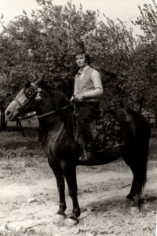
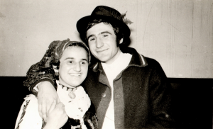
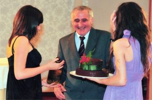
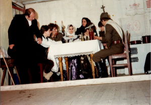
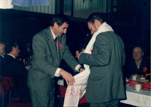
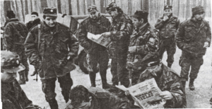
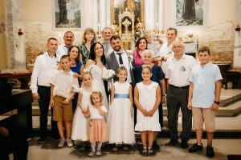
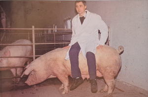

Pavo na konjuRođen sam 24. kolovoza 1952. u Starim Mikanovcima. Potječem iz stare mikanovačke, šokačke obitelji koja je iznjedrila nekoliko naraštaja intelektualaca na raznim područjima. Roditelji su mi bili zemljoradnici. Osnovnu školu pohađao sam u Mikanovcima, a gimnaziju u Vinkovcima gdje sam maturirao 1971. Diplomirao sam 21. listopada 1975. na Prirodoslovno-matematičkom fakultetu u Zagrebu, Matematički odjel i stekao zvanje diplomirani inženjer matematike.
Vjenčao sam se 21.2.1976. s Mandom Ferić iz sela Sapci. Rođena su nam djeca: 1978. Marko, 1979. Vinko, 1982. Antun, 1990. Marija i 1994. Pavao.

Manda i Pavo na Poklade 1974.
Maturalna zabava 2014.Zaposlio sam se 1. rujna 1975. u Gimnaziji Matije Antuna Reljkovića u Vinkovcima gdje sam predavao matematiku do 1980. Tada se zapošljavam do 1987. u Srednjoškolskom centru Braća Ribar u Đakovu te se opet vraćam u vinkovačku gimnaziju u kojoj radim do mirovine 2017. Više od dvadeset mojih učenika doktoriralo je na matematičkim fakultetima, a isto toliko se plasiralo na državno natjecanje. Imao sam dva prvaka Hrvatske sa sto posto osvojenih bodova. Napisao sam i objavio nekoliko stručnih matematičkih radova od kojih se ističu dva u suautorstvu s Ivanom Jurićem iz područja matematičke arheologije objavljena u časopisu Društvena istraživanja Instituta društvenih istraživanja Pilar. To su: Ishodište Pitagorinog poučka u vučedolskoj kulturi na području Hrvatske i Vučedolska šahovnica. U njima na osnovu istraživanja najviše u vinkovačkom muzeju dokazujemo kako se na našem području znalo prije pet tisuća godina da je kvadrat hipotenuze jednak zbroju kvadrata nad obje katete što je nekoliko tisuća godina poslije definirao Pitagora i da je današnja šahovnica hrvatskog grba korištena tri tisućljeća prije Krista za računanje volumena što je bilo značajno pri nabavi bakra i željeza i izradi predmeta od njih.
Osim matematike bavio sam se i drugim aktivnostima. Deset godina igrao sam nogomet u Nogometnom klubu Šokadija iz Starih Mikanovaca i još dvadeset kao veteran, a skoro isto toliko i šah u Šahovskom klubu Šokadija. Sedam godina bio sam član Kulturno-umjetničkog društva Šokadija, jedno vrijeme potpredsjednik. Režirao sam tri priredbe Mladost i ljepota Slavonije te pisao scenarije priredbi i bio voditelj mnogih. Obavljao sam dužnosti vođe puta prilikom putovanja po domovini i izvan nje.
Godine 1982, osnovao sam i vodio Dramsko-literarno-recitatorsko društvo Klasje koje je za mog vremena izvelo oko osamdeset cjelovečernjih predstava od kojih su najvažnije: Šokica Ilije Okrugića, Sokol ga nije volio Fabijana Šovagovića, Pljusak Petra Petrovića Pecije i Državni lopov Fadila Hadžića te organiziralo Večeri humora s uprizorenjima zabavnih sadržaja. Klasje je nekoliko godina bilo organizator Susreta recitatora Općine Vinkovci i Susreta recitatora Zajednice općina Slavonije i Baranje, a njegovi su članovi još stotinjak puta nastupali na raznim priredbama izvodeći skečeve, recitale, recitacije i druge scenske forme.

Što se tiče moje političke aktivnosti u Mjesnoj zajednici Stari Mikanovci bio sam šest godina član Izvršnog savjeta i dvije godine dopredsjednik Skupštine MZ sudjelujući u većini radova na infrastrukturi sela. Za to je vrijeme izgrađeno jedanaest kilometara vodovoda, tvornica pokraj groblja, mrtvačnica, šahovski dom, lovački dom, asfaltirane su gotovo sve ulice i omogućeno kvalitetno djelovanje petnaestak društava, klubova, udruga i saveza.

Račan i PavoSredinom prosinca 1989. sudjelovao sam kao član Saveza komunista na 11. kongresu SKH gdje sam se 11. 12. 1989. u zapaženoj raspravi zalagao za reformska opredjeljenja. Na tom Kongresu izglasano je višestranačje a za predsjednika je izabran Ivica Račan za koga mogu reći da mi je bio prijatelj. On je odmah nakon izbora na Badnjak 1989. godine posjetio Stare Mikanovce i taj posjet u povijesti sela trebao bi zauzeti važnije mjesto. Svi Mikanovčani su oduševljeno dočekali jednog od najznačajnijih ljudi u stvaranju hrvatske države. On je par mjeseci poslije na 14. kongresu SKJ na čelu hrvatske delegacije napustio Kongres što je značilo raspad Jugoslavije. Račan i mnogi drugi istaknuti političari idućih godina dolazili su u Mikanovce, a ja ponekad kažem da je pola Vlade i Sabora 2000. bilo kod mene u kući (Ivica Račan, Mato Arlović, Zdravko Tomac, Tonino Picula, Milanka Opačić, Davorko Vidović, Željka Antunović, Snježana Biga Friganović, Dragan Kovačević, Gordana Sobol). Dugo vremena bio sam potpredsjednik županijske organizacije SDP-a i u dva mandata član Glavnog odbora SDP-a. Nažalost, na području Mikanovaca i bivše Općine Vinkovci nisam imao ni jednog čovjeka koji bi mi značajnije pomogao.

Položaj u DurgutoviciPočetkom svibnja 1991. uključio sam se u Hrvatsku vojsku u kojoj sam proveo četrnaest mjeseci. Postavljen sam za zapovjednika 1. bataljuna 109. brigade HV čiji su pripadnici bili iz Starih i Novih Mikanovaca, Vođinaca, Ivankova, Jarmine, Retkovaca, Prkovaca, Andrijaševaca i Rokovaca i na toj sam dužnosti bio do 12. prosinca 1991. organizirajući obranu linije Durgutovica-Borinci-Jarmina i sudjelujući sa svojim postrojbama u obrani Vukovara, Borova, Đeletovaca, Vinkovaca… Posebno bih istaknuo naš doprinos u obrani Vukovara i Bogdanovaca. Krajem kolovoza u Vukovar je otišlo 50 boraca mojeg bataljuna i zauzelo položaje kod Doma tehnike i Internata. Oni su zajedno s ostalim malobrojnim i slabo naoružanim braniteljima zaslužni što Vukovar nije tada pao. Dva i pol mjeseca odolijevao je napadima najelitnijih neprijateljskih postrojbi čime je oslabio JNA i omogućio osposobljavanje HV-e.
Od sredine prosinca bio sam na dužnosti pomoćnika zapovjednika brigade za IPD (Informativno-psihološka djelatnost) i na njoj ostao do 1. srpnja 1992. Dobio sam čin bojnika. Bio sam koordinator knjige Ratni album 109. brigade HV Vinkovci koja je izašla 1992. u izdanju Privlačice i autor sam dvaju članaka u toj knjizi. Također sam autor članka Prva bojna u knjizi 109. brigada na vratima Hrvatske objavljenoj 2011.
Danas živim u Starim Mikanovcima u obiteljskoj kući, oženjen sam i imam četiri sina i jednu kćer. Dobio sam četiri unuke i tri unuka.


Utvrđivanje tjeranja kod krmačeImao sam svinjogojsku obiteljsku farmu s pedesetak krmača i proizvodnju oko tisuću prasadi ili tovljenika godišnje. U nakladi Privlačice iz Vinkovaca objavio sam 1994. knjigu Proizvodnja prasadi koja je valjda bila prvi priručnik o svinjogojstvu u RH. Sastoji se od šest poglavlja: Tipovi i pasmine svinja, Izgradnja objekata za svinje, Postupci u pojedinim fazama proizvodnje, Hranidba, Bolesti i liječenje i Proračun isplativosti. Dvije godine držao sam predavanja o svinjogojstvu u dvadesetak mjesta Vukovarsko-srijemske, Osječko-baranjske i Brodsko-posavske županije.
Što se tiče moga književnog rada objavio sam 3 romana, a četvrti je gotov i namjeravam ga promovirati u ožujku 2024. Napisao sam još zbirku pripovjedaka i desetak kraćih drama i igrokaza koji su igrani i mogli bi se objaviti.
Križevi i ruže 2002., vlastita naklada. Roman je doživio još dva izdanja te je preveden na mađarski jezik i izdan u Pečuhu 2008. Na tristo stranica donosi šokačku priču o ljubavi, radu i životu u Mikanovcima nakon Prvog svjetskog rata.
Godine 2005. dao sam svoje priloge knjigama Vicoteka Slavonije, Baranje i Srijema i Slavonske pismice koje je izdala Privlačica.
Zamah leptirovih krila 2013., nakladik Privlačica. Roman na 500 stranica opisuje život u socijalističkim radnim zadrugama od 1948. do 1952. godine.
Bílā kuća, 2019. nakladnik Certis d.o.o. Cerna. Roman je cijeli pisan u šokačkom dijalektu, a radnja je smještena u prvu polovicu devetnaestog stoljeća.